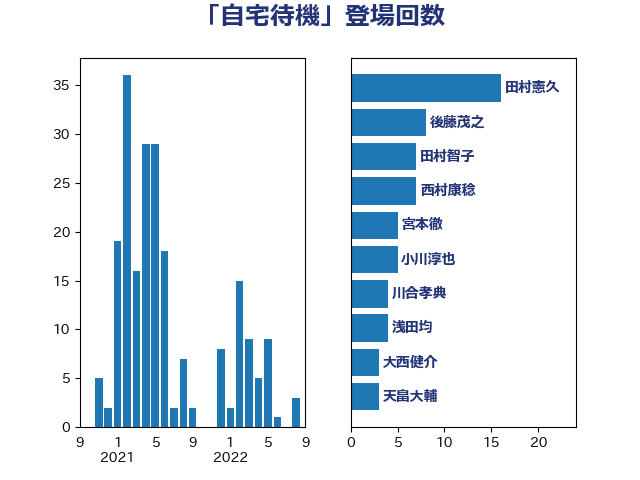

単語「自宅待機」

| 田村憲久 | 自由民主党 | 16 回 |
| 後藤茂之 | 自由民主党 | 8 回 |
| 田村智子 | 日本共産党 | 7 回 |
| 西村康稔 | 自由民主党 | 7 回 |
| 宮本徹 | 日本共産党 | 5 回 |
| 小川淳也 | 立憲民主党 | 5 回 |
| 川合孝典 | 国民民主党 | 4 回 |
| 浅田均 | 日本維新の会 | 4 回 |
| 大西健介 | 立憲民主党 | 3 回 |
| 天畠大輔 | れいわ新選組 | 3 回 |
| 山本太郎 | れいわ新選組 | 3 回 |
| 岡本あき子 | 立憲民主党 | 3 回 |
| 川田龍平 | 立憲民主党 | 3 回 |
| 東徹 | 日本維新の会 | 3 回 |
| 森山浩行 | 立憲民主党 | 3 回 |
| 緑川貴士 | 立憲民主党 | 3 回 |
| 菅義偉 | 自由民主党 | 3 回 |
| 伊藤孝江 | 公明党 | 2 回 |
| 小西洋之 | 立憲民主党 | 2 回 |
| 松山政司 | 自由民主党 | 2 回 |
| 枝野幸男 | 立憲民主党 | 2 回 |
| 梅村聡 | 日本維新の会 | 2 回 |
| 榛葉賀津也 | 国民民主党 | 2 回 |
| 浦野靖人 | 日本維新の会 | 2 回 |
| 田島麻衣子 | 立憲民主党 | 2 回 |
| 田村まみ | 国民民主党 | 2 回 |
| 阿部知子 | 立憲民主党 | 2 回 |
| 仁木博文 | 無所属 | 1 回 |
| 伊藤孝恵 | 国民民主党 | 1 回 |
| 倉林明子 | 日本共産党 | 1 回 |
| 吉川元 | 立憲民主党 | 1 回 |
| 吉田とも代 | 日本維新の会 | 1 回 |
| 吉田統彦 | 立憲民主党 | 1 回 |
| 吉良よし子 | 日本共産党 | 1 回 |
| 和田義明 | 自由民主党 | 1 回 |
| 塩川鉄也 | 日本共産党 | 1 回 |
| 塩田博昭 | 公明党 | 1 回 |
| 安江伸夫 | 公明党 | 1 回 |
| 小池晃 | 日本共産党 | 1 回 |
| 小沢雅仁 | 立憲民主党 | 1 回 |
| 山井和則 | 立憲民主党 | 1 回 |
| 山田美樹 | 自由民主党 | 1 回 |
| 岸真紀子 | 立憲民主党 | 1 回 |
| 打越さく良 | 立憲民主党 | 1 回 |
| 本村伸子 | 日本共産党 | 1 回 |
| 本田顕子 | 自由民主党 | 1 回 |
| 柴田巧 | 日本維新の会 | 1 回 |
| 森屋隆 | 立憲民主党 | 1 回 |
| 河西宏一 | 公明党 | 1 回 |
| 泉健太 | 立憲民主党 | 1 回 |
| 浜口誠 | 国民民主党 | 1 回 |
| 渡辺猛之 | 自由民主党 | 1 回 |
| 玉木雄一郎 | 国民民主党 | 1 回 |
| 田中健 | 国民民主党 | 1 回 |
| 石垣のりこ | 立憲民主党 | 1 回 |
| 福島みずほ | 社会民主党 | 1 回 |
| 篠原孝 | 立憲民主党 | 1 回 |
| 西岡秀子 | 国民民主党 | 1 回 |
| 角田秀穂 | 公明党 | 1 回 |
| 赤嶺政賢 | 日本共産党 | 1 回 |
| 足立康史 | 日本維新の会 | 1 回 |
| 鈴木義弘 | 国民民主党 | 1 回 |
| 階猛 | 立憲民主党 | 1 回 |
| 馬場伸幸 | 日本維新の会 | 1 回 |
| 高木かおり | 日本維新の会 | 1 回 |
| 高橋千鶴子 | 日本共産党 | 1 回 |
| 鰐淵洋子 | 公明党 | 1 回 |